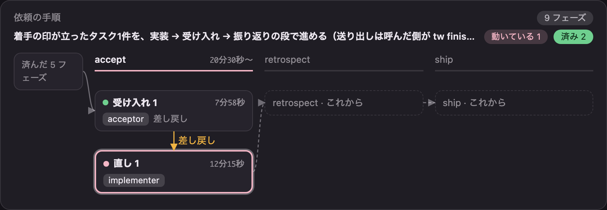
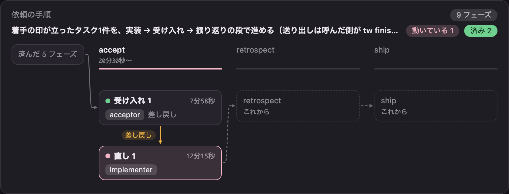
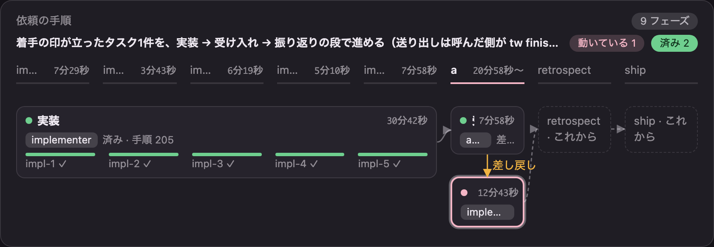
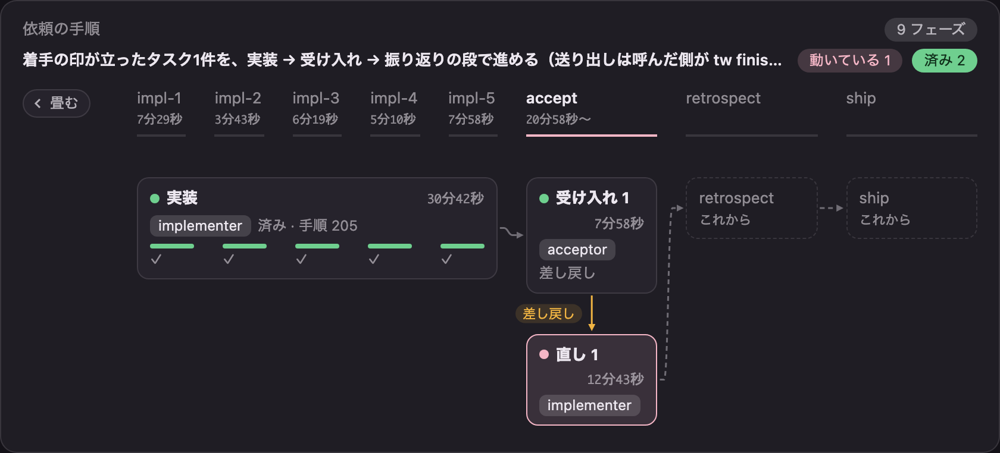

ピルの「手順」の図 — 今と直した形
- 矢印: 線は矢じりの根元で止める（矢じりは 6px の固定寸法で、点線が先まで伸びない）。両端に水平の足を付け、列の間を 16px から 24px、行の間を 26px から 34px に広げる。差し戻しの字は 11px の小札にして線の左に置く。
- 今の段の枠: 差し色の縁 1px だけにする。選んだ印は 2px の輪をやめ、地を薄い差し色にする。
- 開いた図の段の見出し: 名前と所要を2行に分ける。済んだ範囲の段は細く、残りの段に幅を回す。狭い箱は所要と札を折り返し、字を「a…」に削らない。範囲の箱の目盛りは見出しと重なる段の名前を外して ✓ だけにする。
- 畳む導線: 開いたときは「済んだ n フェーズ」があった左の列に「‹ 畳む」の札を置き、押すと1枚目の形へ戻る。
畳んだ図（1枚目の場面）
今
直した形
開いた図（2枚目の場面）
今
直した形
場面は scene.html?form=now|after&at=folded|unfolded で切り替えられる。